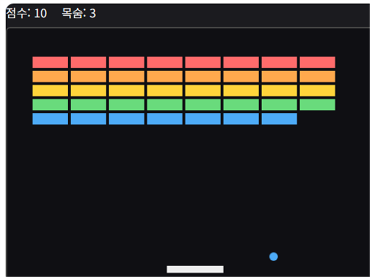

벽돌깨기는 패들로 공을 튕겨 화면 위쪽의 벽돌을 모두 깨는 클래식 아케이드 게임입니다. 공을 놓치면 생명이 하나 줄어들고, 생명이 모두 소진되면 게임이 끝납니다.
기본 규칙
- 마우스(또는 터치)를 좌우로 움직여 패들을 조작합니다.
- 공이 벽돌에 닿으면 벽돌이 사라지고 점수가 오릅니다.
- 공을 놓치면 생명이 1 줄어들며, 생명이 0이 되면 게임 오버입니다.
- 모든 벽돌을 깨면 클리어입니다.
고득점 팁
1. 패들 가장자리로 각도를 조절하세요
공은 패들의 어느 지점에 맞았는지에 따라 반사 각도가 달라집니다. 패들 중앙보다 가장자리로 받아치면 더 날카로운 각도로 보낼 수 있어 원하는 벽돌을 노리기 쉽습니다.
2. 위쪽 벽돌부터 뚫으세요
상단에 길이 뚫리면 공이 벽돌 사이에 갇혀 연쇄로 여러 벽돌을 부수는 경우가 많습니다. 특정 줄을 먼저 집중 공략해 통로를 만들면 이후 진행이 훨씬 수월해집니다.
직접 플레이해보고 싶다면 여기서 바로 시작할 수 있습니다.